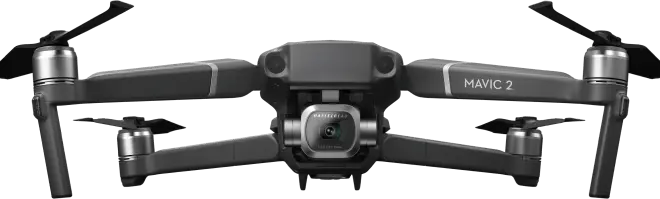

mavic 2 pro
Mavic 2 Pro
Квадрокоптер Dji Mavic 2 Pro
с профессиональной камерой Hasselblad
Квадрокоптер Dji Mavic 2 Pro
с профессиональной камерой Hasselblad
Дрон Mavic 2 Pro - это инженерное чудо, идеальное для аэросъемки. Дрон обладает всеми лучшими технологиями DJI, он преобразит мир аэросъемки.
Mavic 2 Pro оснащен совершенно новой камерой Hasselblad L1D-20c. Камера L1D-20c работает по уникальной технологии Hasselblad Natural Colour Solution (HNCS)5, позволяющей пользователям делать великолепные снимки с воздуха с разрешением в 20 мегапикселей и потрясающими цветами.

Mavic 2 унаследовал 6 стандартных режимов интеллектуальной съемки QuickShot:Roket/Dronie/Circle /Helix/Boomerang/Asteroid.
Усовершенствованный режим второго поколения распознаёт и отслеживает объекты ещё точнее, быстрее и умнее.
Mavic 2 поддерживает 4 режима панорамной съёмки: сферическая, 180 градусов, горизонтальная, вертикальная
Технология Hyperlapse в четырёх режимах исполнения. Улучшенный фото режим HDR Функция HyperLight для съёмки в условиях слабого освещения 4К съёмка
Mavic 2 Pro поддерживает цветовой профиль Dlog-M 10 бит с более широким динамическим диапазоном, дающим больше возможностей для цветокоррекции.
Камера Hasselblad L1D-20С известны эргономичным дизайном и превосходным качеством изображений.
Зона активной работы новой 1-дюймовой матрицы CMOS в четыре раза превышает показатели Mavic Pro
Благодаря поддержке видео 4K HDR 10 бит, Mavic 2 Pro можно подсоединить к совместимому с HLG 4K ТВ и просматривать запись в полном цветовом спектре
В Mavic 2 улучшены практически все аспекты: камера, передача видеосигнала, полётное время, скорость, уровень шума, обнаружение препятствий в нескольких направлениях, интеллектуальные функции и уникальная функция Hyperlapse (гиперлапс).
В Mavic 2 улучшены практически все аспекты: камера, передача видеосигнала, полётное время, скорость, уровень шума, обнаружение препятствий в нескольких направлениях, интеллектуальные функции и уникальная функция Hyperlapse (гиперлапс).
В Mavic 2 улучшены практически все аспекты: камера, передача видеосигнала, полётное время, скорость, уровень шума, обнаружение препятствий в нескольких направлениях, интеллектуальные функции и уникальная функция Hyperlapse (гиперлапс).
В Mavic 2 улучшены практически все аспекты: камера, передача видеосигнала, полётное время, скорость, уровень шума, обнаружение препятствий в нескольких направлениях, интеллектуальные функции и уникальная функция Hyperlapse (гиперлапс).